Gala Kerzen:candele profumate

Parliamo oggi di un'azienda tedesca la Gala Kerzenche si impegna alla produzione di candele profumate per interni, ma anche per luoghi esterni, da oltre 40 anni .
Il loro marchio non è soltanto rivolto ad un pubblico tedesco ma, avendo un sito Europeo, si estende su tutto il territorio sia estero che italiano.
Stimando grandi numeri ( 500 dipendenti - 30.000 tonnellate di paraffina prodotta all'anno), fanno di quest'azienda un'icona nel loro settore.
Possiamo comunque tranquillizzarci, se qualcuno leggendo ha pensato al pericolo di un possibile incendio, in quanto l'azienda fa parte dell'Associazione Candele Europea (ECA).
Cos'è la ECA?
La ECA è un'alleanza delle più grandi e affidabili aziende produttive di candele in Europa.
L'obiettivo dell'associazione è :
● manutenzione e ulteriore sviluppo della sicurezza, salute e tutela dell'ambiente.
●inoltre, mantenere e aumentare la qualità delle candele
● informare e far partecipare ai sviluppi giuridici
● individuazione di nuove materie prime e lo sviluppo di nuove tecnologie.
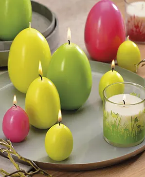
Dando un'occhiata al sito, tranquillamente traducibile e quindi facile alla comprensione e all'eventuale acquisto, possiamo notare subito la vasta gamma di candele che l'azienda offre.
Io ho avuto difficoltà a scegliere quali prendere perchè fosse stato per me le avrei acquistate tutte.
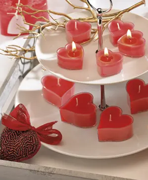
Offre candele oltre che per interni ed esterni come dicevo sopra, anche per occasioni in particolare tipo: pasqua, san valentino e altri temi.
Io sono andata più sulle fragranze e forme diverse.
Ho preso:
La candela profumata nel vasetto in vetro al MANGO E PAPAIA giallo
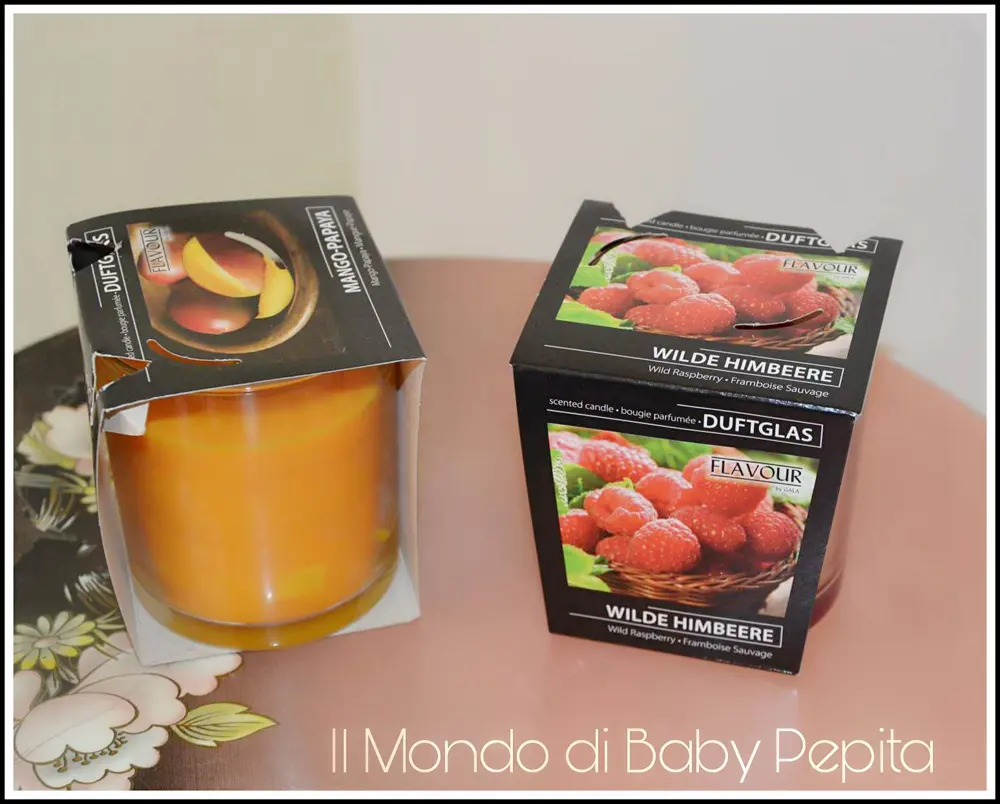
Ha un'aroma esotico fruttato, stimola la concentrazione e crea una piacevole atmosfera invitante.
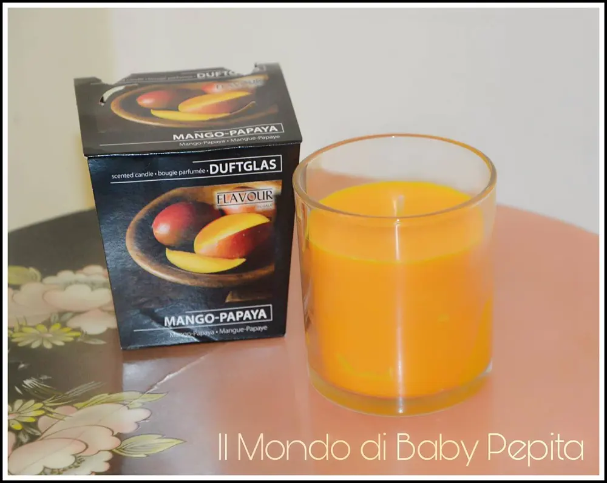
Altezza:9 cm
Diametro 7 cm
Tempo di combustione : circa 28 ore
Prezzo: 1,99 €
Un'altra candela che ho preso è sempre dello stesso design in vasetto semplice in vetro all'aroma di LAMPONE SELVATICO ed è di un bel colore bordeaux.
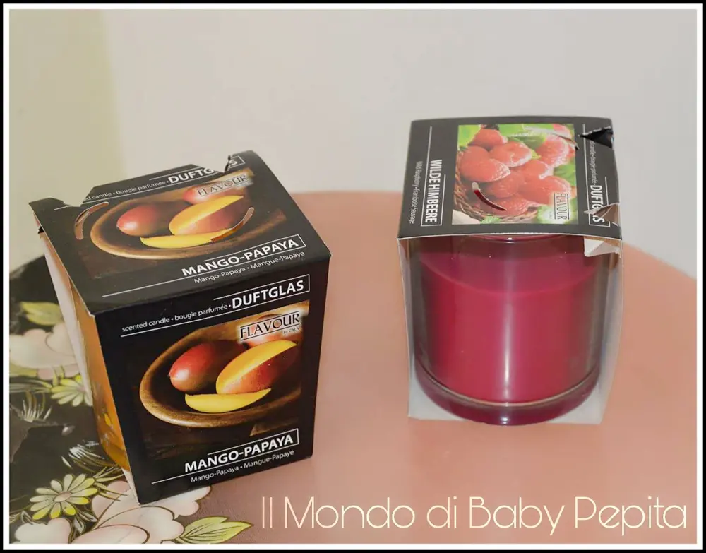
L'aroma è dolce di un buon sapore fruttato di lampone e accendendo la candela; oltre all'atmosfera di benessere, stimola il buon umore.
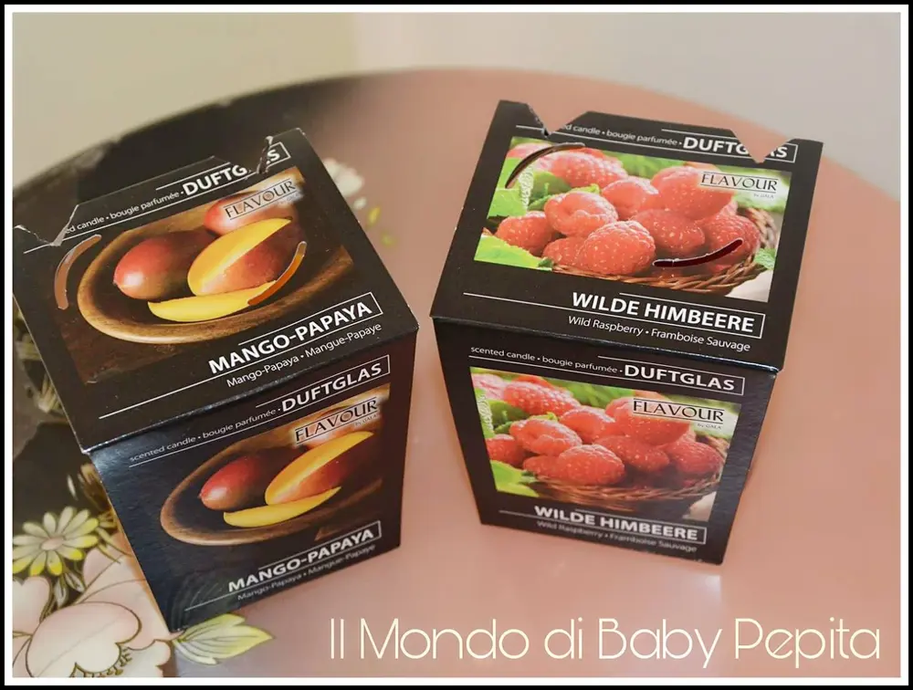
Altezza:9 cm
Diametro 7 cm
Tempo di combustione : circa 28 ore
Prezzo: 1,99 €
Per provare la durata e l'effetto di diverse candele e forme, ho preso un cero più o meno alla fragranza di "LENZUOLA FRESCHE" di colore bianco.
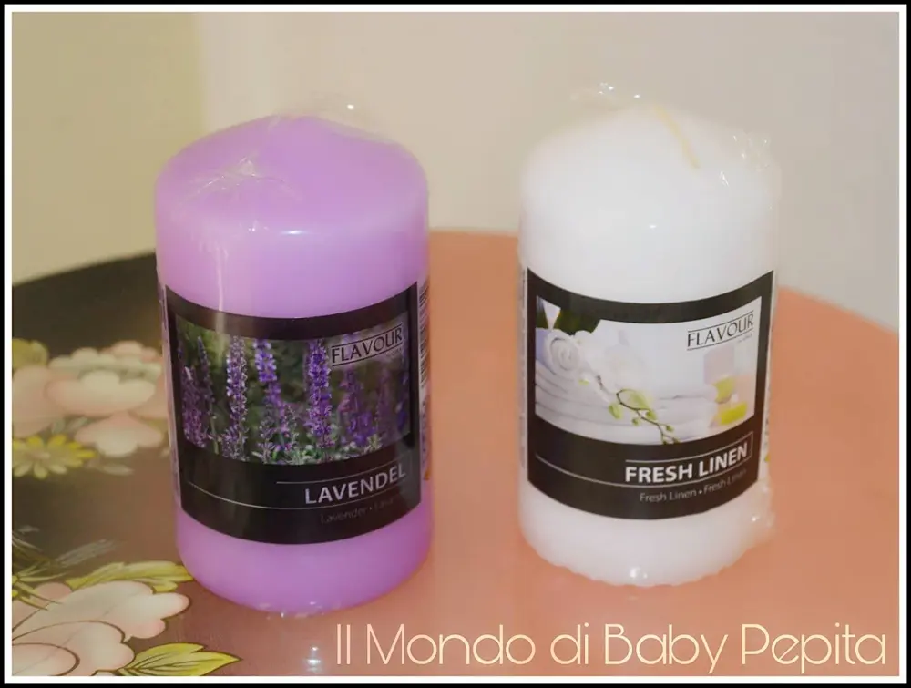
Che profumo ha lenzuola fresche?
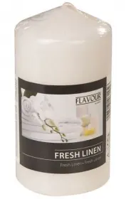
Ha la fragranza di biancheria appena lavata e pulita. Insomma un profumo di freschezza. Inutile dire che da un senso di nuovo accendendo questa candela, di rivitalizzazione.
Altezza: 11 cm
Diametro: 6 cm
Durata di combustione: circa 29 ore
Prezzo: 1,29 €
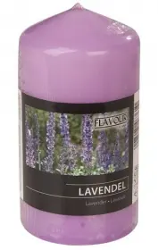
Essendo una candela classica ne ho presa un'altra come quella sopra a cero ma stavolta alla fragranza di LAVANDA ovviamente il colore è lilla.
Io amo il profumo di lavanda e non potevo non prendere una candela di questa profumazione, da un senso di rilassamento e freschezza bellissimo. Infatti tale candela stimola l'equilibrio tra anima e corpo rilassando i nervi attraverso il suo effetto calmante.
Altezza: 11 cm
Diametro: 6 cm
Durata di combustione: circa 29 ore
Prezzo: 1,29 €
Per finire ho voluto prendere le classiche cialde per le lanterne al profumo di VANIGLIA quindi color crema.
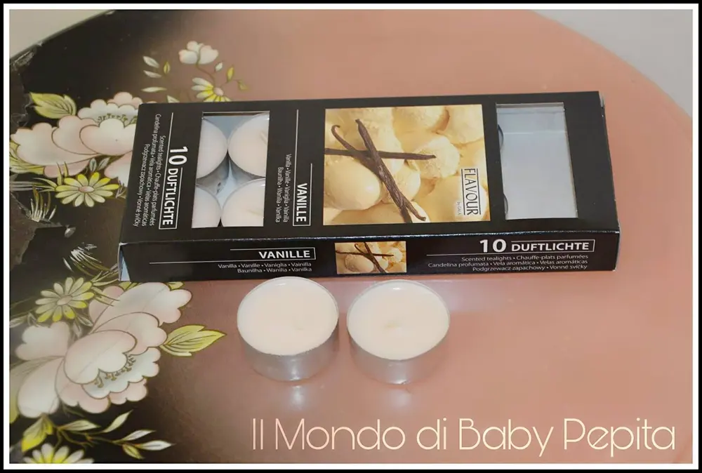
Questo è un altro profumo che adoro poiché mi da il senso di leggerezza ed è una fragranza delicatissima.
L'aroma è dolce proprio come quella della vera vaniglia che si mangia. Stimola l'attività fisica e mentale.
Calmando le tensioni interisti e nervosismi.
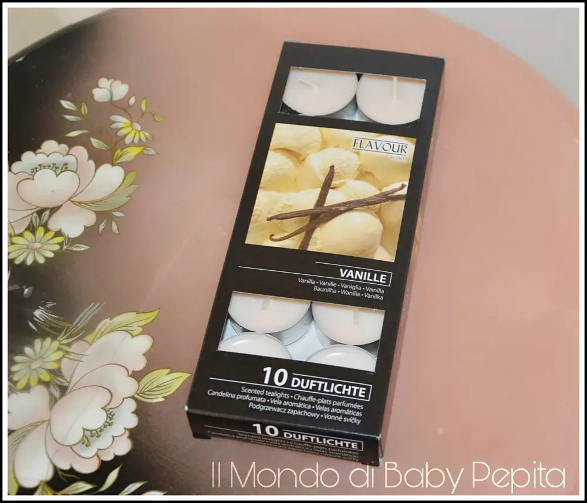
Altezza: 2 cm
Diametro: 4 cm
Durata di combustione: circa 4 ore
La confezione è composta da 9 cialde
Prezzo: 1,19 €
Prezzi ottimi per fantastiche candele per un'atmosfera davvero unica di relax e piacere.
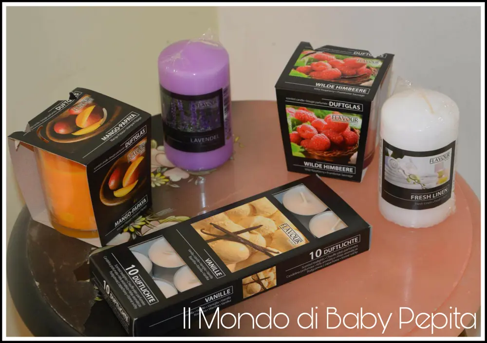
SITI E SOCIAL GALA KEREN: